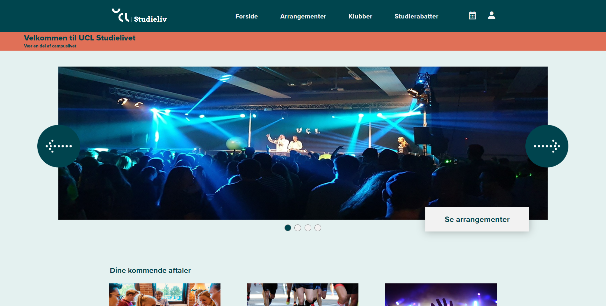
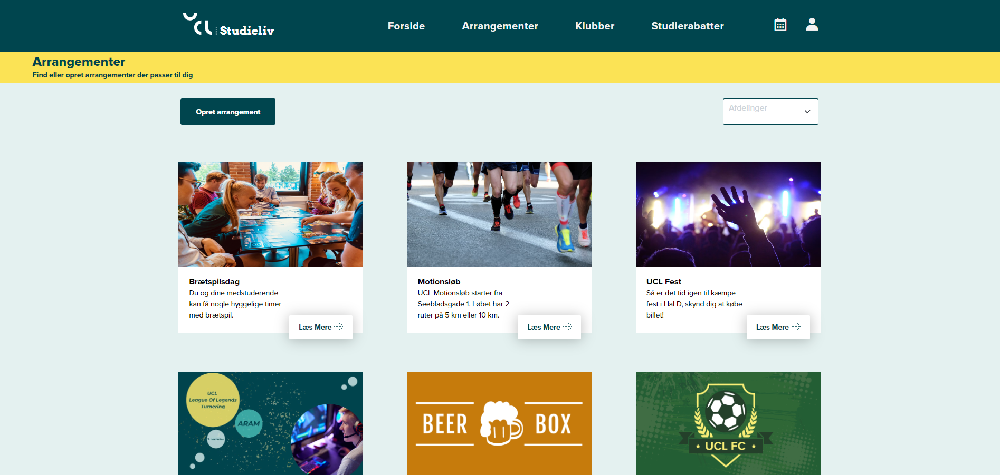
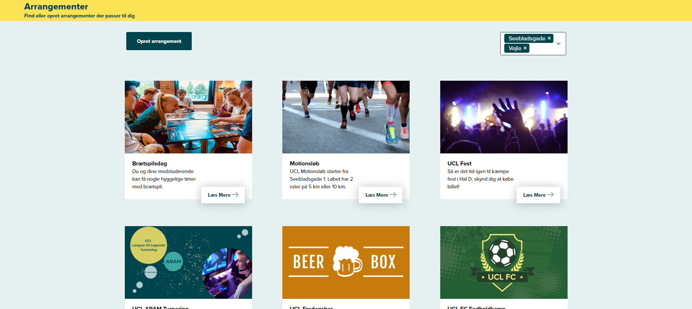
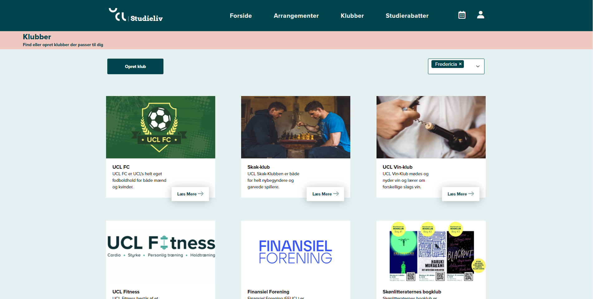

We got an assignment handed from UCL - How can a digital media help to solve a need or a challenge for students at UCL?
The week before the assignment started, we had a week of research, where we interviewed some students around our campus at UCL about challenges.
All the students mentioned that they wanted somewhere to see all the events going on at UCL and maybe have an easier way to make some events by themselves. Therefore we made a site by UCL with the social events and clubs that UCL have. We also asked UCL how many people actually meet up to the events they have. The told as that almost no one meets up, and the students told us they don't know of any events other than the parties.
We made this site with the colors and fonts of UCL's identity to keep their identity and make it clear that they where the owner of the site. This was a project with a lot of focus on implementing Javascript on the site. We found 4 different javascript things that covered pensum of our second semester, and made one each.
I made two subpages called "Arrangementer" and "Klubber", where the students could see the events going on at all UCL school in Denmark, and also all the clubs at the different UCL schools. One of the Javascript things we chose to make was a filter funktion, where you chose a school and all the thing shows up at the school you check of. We made this because with all the students on every school, we got a potential of 100 events spread on 6 school on Jylland and Fyn, and the students on Fyn doesn't need to know about events on Jylland.
 If you wanna watch the site for yourself, click the button below. To watch the sites i made, you can click on "Arrangementer" or "Klubber".